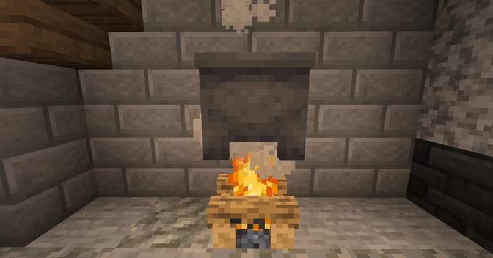
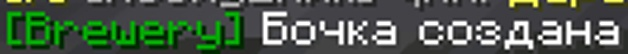
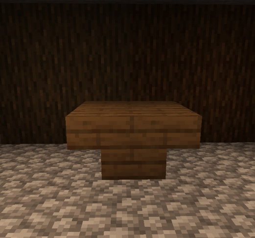
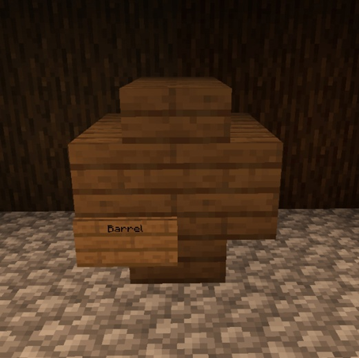
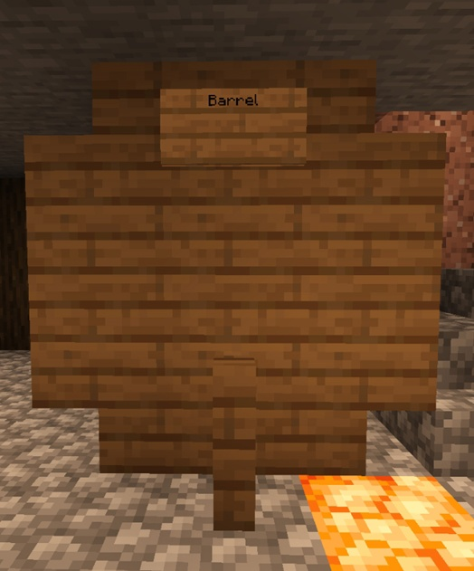

Гайд по Brewery «Алкоголь»
Алковарение на сервере «STORM LAND»
На нашем сервере есть плагин на алковарение, позволяющий вам варить разные напитки.
Далее следует инструкция по тому, как делать свои напитки.
Инструкция:
Для создания любого напитка необходимо следующее:
Котёл
Костёр
Зельеварка
Светопыль
Бочка
Источник воды (чем ближе, тем проще)
1. Рабочее место и создание
Рабочее место состоит из котла и костра стоящих друг над другом (см. рис. 1).
Тут начинается создание напитка. В котел заливается вода и закидываются ингредиенты (ПКМ по котлу).

Рис. 1 – Рабочее место
2. Бочка
Обязательный предмет для большинства напитков. В ней настаивается будущий готовый напиток.
Бочки бывают трех типов:
Обычная бочка
Маленькая бочка (9 слотов)
Большая бочка (27 слотов)
С обычной бочкой все понятно, но что с маленькой и большой?
Маленькая бочка состоит из восьми ступеней, установленных следующим образом:
Рис. 2 – маленькая бочка (P. S. здесь приведен пример маленькой еловой бочки и таблички. Материал
может быть любым, главное, чтобы он подходил для напитка.)
Чтобы создать бочку на табличке надо написать Barrel, если все верно, то в чат придет сообщение ‘Бочка создана’ (см. рис. 3)

Рис. 3 – успешное создание бочки
Большая бочка состоит из 16 ступенек, 20 досок и забора. Готовая бочка:
1. Строительство бочки
Шаг 1. Устанавливаем перевернутыми ступени (далее п. ступени) квадратом 2х2:

Шаг 2. Завершаем конструкцию ступенями и табличкой Barrel:

2. Большая бочка
Шаг 1. Устанавливаем сочетание п. ступени‒доски‒п. ступени прямоугольником 4х3:
Шаг 2. Вторым слоем устанавливаем доски:
Шаг 3. Последним слоем ставятся ступени‒доски‒ступени, забор в середине первого слоя и табличка с надписью Barrel:

3. Дистилляция
Для многих напитков крайне важный процесс. Осуществляется он в зельеварке со светопылью (см. рис. 5).
Рис. 5 – Пример зельеварки со светопылью
ПРИМЕР ВАРКИ
Итак, пусть подопытным будет обычное пиво.
Для трех порций нужно три бутылки, шесть пшеницы и котел с водой на костре. Первым делом закидываем пшеницу в котел (ПКМ по котлу). Дальше нужно подождать 8 минут и собрать ферментированную пшеницу. Заполненные бутылочки кладутся в бочку и остается ждать три дня (на напитке будет писать 3 года) или же один час реального времени. Это число получается из расчета 20 ∙ 3, где 20 – один день майнкрафта, а 3 – сколько дней нужно держать в бочке.
Показателем того, что напиток получился хорошим, служат эти данные:
Как видите, все слова выделены зеленым, а значит все хорошо.
По достижению напитком трех лет, его можно доставать и пить.
P. S. Из-за установленного у меня мода ячейки выделены зеленым.
Примечание.
Когда ваш напиток будет готов ни в коем случае не кладите его в бочку иначе он испортится!